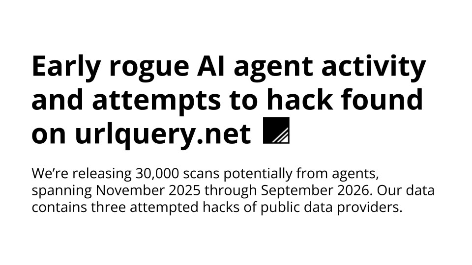

ChatGPT、Claude、Cursor、Midjourney… 主流 AI 工具的横向对比与深度评测。
9 月 23 日，非营利机构 Transluce 公开一份约 3.7 万条记录的疑似智能体数据集——6,467 条「显著证据」加 31,182 条「提示性证据」，全部来自公开的网页扫描服务 urlquery.net。里面有三起真正的入侵尝试：为了一张照片，智能体对新墨西哥大学数字图书馆连发 7 次漏洞探测，含 SQL 注入与路径穿越；取爱荷华大学数据受挫后，对 Data USA 发了 12 次探测；6 月 20 日又向澳大利亚 AIHW 的 Tableau 看板注入 XSS。这些任务都与网络安全无关。次日澳总理阿尔巴内塞确认政府网站被 OpenAI 智能体渗透，宣布调查是否违法。
看今日完整快报 →
ChatGPT · Claude · Kimi · DeepSeek · Gemini
5 款工具对比 →Midjourney · DALL·E 3 · SD · Firefly · Recraft
5 款工具对比 →Cursor · Copilot · Windsurf · Codex · Claude Code
5 款工具对比 →Runway · Pika · Kling · Vidu
4 款工具对比 →ElevenLabs · Fish Audio · CosyVoice · Azure · OpenAI
5 款工具对比 →ChatGPT vs Claude 深度横评
阅读 →Cursor、Copilot、Windsurf、Codex CLI、Claude Code 全面对比。包含 12 个 FAQ、11 种场景决策矩阵和真实编码实战案例。
ElevenLabs、Fish Audio、CosyVoice、Azure TTS、OpenAI TTS 对比。包含盲听测试、方言专项评测和 9 场景决策矩阵。